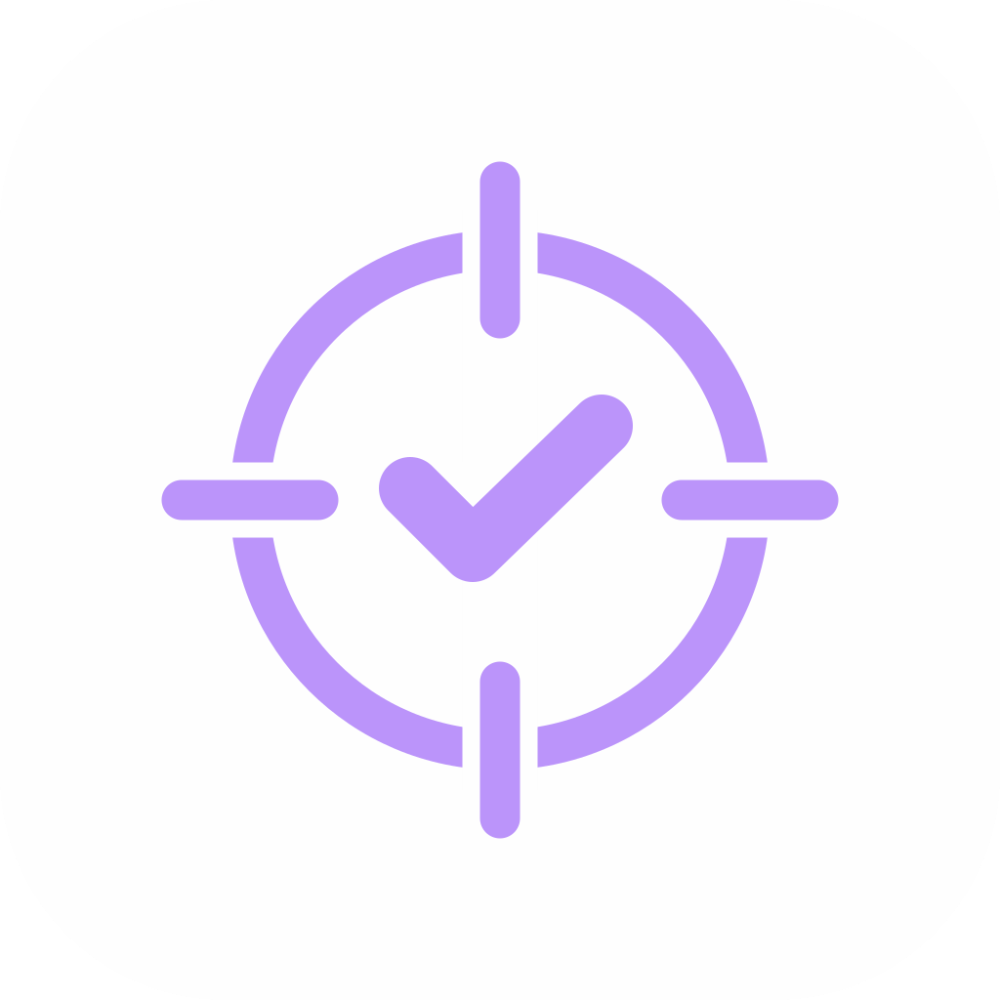

Política de privacidad
En vigor desde el 9 de octubre de 2026.
Lo que apuntas en la app
Todo lo que escribes en MikaLog (días, hábitos, sueño, partidas, notas) se guarda solo en la carpeta de datos de tu ordenador. MikaLog no tiene cuentas, no recoge estadísticas de uso y no envía esos datos a nadie.
Si conectas tu cuenta de Riot (opcional)
- Inicias sesión en la página oficial de Riot Games. MikaLog nunca ve tu contraseña.
- Riot comparte con MikaLog el identificador de tu cuenta (PUUID) y tu Riot ID. Tu ordenador guarda un token de acceso en el almacén de credenciales de Windows; no va en tus copias ni en las exportaciones.
-
Solo cuando pulsas «Sincronizar», la app envía ese token y la fecha
al servidor de MikaLog
(
mikalog-sync.miguelangeldiaztic.workers.dev, alojado en Cloudflare). El servidor pide a Riot tus partidas de esa fecha y devuelve a tu ordenador mapa, agente, resultado, kills, muertes, puntuación y rondas de cada una. - El servidor no guarda tu cuenta, tu token ni tus estadísticas. Solo conserva unos minutos los datos del inicio de sesión hasta que la app los recoge, y puede guardar en caché los datos de una partida (que ya publica Riot) para no pedirla dos veces.
- Tus estadísticas no se muestran a otros jugadores. Aun así, Riot pide avisar de que vincular tu cuenta hace públicos tus datos de jugador.
- Cloudflare puede registrar datos técnicos de las peticiones, como la dirección IP, según su propia política de privacidad.
Desconectar
En Ajustes > «Cuenta de Riot» > «Desconectar» se borra el token de tu ordenador. También puedes retirar el acceso de MikaLog desde la configuración de tu cuenta de Riot. Las partidas ya sincronizadas siguen en tu carpeta de datos y puedes borrarlas desde la app.
Lo que no hace
MikaLog no vende datos, no muestra anuncios, no cobra y no lee datos de otros jugadores.
Contacto
Miguel Ángel Díaz Gutiérrez (MikaEl) · miguelangeldiaztic@gmail.com · incidencias en GitHub
English
Effective 9 October 2026.
Your logs. Everything you enter in MikaLog stays in the data folder on your computer. MikaLog has no accounts, collects no usage analytics and sends that data nowhere.
Optional Riot account link. You sign in on Riot Games' official page; MikaLog never sees your password. Riot shares your account identifier (PUUID) and Riot ID. Your computer keeps an access token in the Windows Credential Manager, never in backups or exports. Only when you press "Sync" does the app send that token and a date to the MikaLog server (mikalog-sync.miguelangeldiaztic.workers.dev, hosted on Cloudflare), which asks Riot for your matches on that date and returns map, agent, result, kills, deaths, score and rounds for each one. The server does not store your account, token or stats; it keeps sign-in data for a few minutes until the app collects it, and may cache match data that Riot already publishes. Your stats are not shown to other players; as Riot requires, note that linking your account makes your player data public. Cloudflare may log technical request data such as IP addresses under its own privacy policy.
Unlinking. Settings > "Riot account" > "Disconnect" deletes the token from your computer. You can also revoke MikaLog's access from your Riot account settings.
What it doesn't do. No selling of data, no ads, no payments, no other players' data.
Contact. miguelangeldiaztic@gmail.com or GitHub issues.